온실가스관리기사 (2022-04-24 기출문제)
1과목: 기후변화개론
1. 교토의정서에서 기후변화의 주범으로 지정한 6대 온실가스에 해당하지 않는 것은?
- 수소불화탄소
- 염화불화수소
- 육불화황
- 과불화탄소
(정답률: 알수없음)

2. 환경 분야의 국제협력을 촉진하기 위해 UN 내에 설치된 국제협력 추진기구로 환경에 관한 종합적인 고찰, 감시 및 평가를 수행하는곳은?
- IAEA
- UNIDO
- UNDP
- UNEP
(정답률: 알수없음)
3. 탄소성적표지 제도에 관한 내용으로 옳지 않은 것은?
- 온실가스 배출량을 제품에 표기하여 소비자에게 제공함으로써 시장주도 저탄소 소비문화확산에 기여한다.
- 법적 강제 인증제도가 아니라 기업의 자발적 참여에 의한 인증제도이다.
- 탄소배출량 인증, 저탄소제품 인증, 탄소중립 제품 인증의 3단계로 구성된다.
- 탄소배출인증제품은 기후변화에 대응한 제품임을 기업에서 인증한 것이다.
(정답률: 알수없음)
4. 기후변화 시나리오 공통사회 경제경로(SSP, shared socioeconomic pathways)에 관한 내용으로 옳지 않은 것은?
- SSP1-2.6 : 친환경 기술의 빠른 발달로 화석연료 사용이 최소화되고 지속가능한 경제성장을 이룰 것으로 가정하는 경우
- SSP2-4.5 : 기후변화 완화 및 사화경제의 발전 정도를 중간 단계로 가정하는 경우
- SSP3-7.0 : 기후변화 완화 정책에 적극적이며 기술개발이 빨라 기후변화에 빠른 대응이 가능한 사회구조를 가정하는 경우
- SSP5-8.5 : 산업기술의 빠른 발전에 중심을 두어 화석연료 사용이 많고 도시 위주의 무분별한 개발이 확대될 것으로 가정하는 경우
(정답률: 알수없음)
5. 온실가스 배출권거래제에 관한 내용으로 옳지 않은 것은?
- 주무관청은 배출권시장 조성자의 시장조성 활동을 위해 일정 수량의 배출권을 예비분으로 보유해야 한다.
- 계획기간 중 사업장이 신설되어 해당 이행연도에 온실가스를 배출한 경우 할당대상업체에 배출권을 추가 할당할 수 없다.
- 배출권 할당방식에는 배출량 기준 할당방식(GF)과 배출효율 기준 할당방식(BM)이 있다.
- 온실가스 감축 여력이 낮은 사업장은 직접적인 감축을 하지 않고 배출권을 살 수 있다.
(정답률: 알수없음)
6. 유엔기후변화협약의 모든 당사국이 이행해야하는 사항에 해당하지 않는 것은?
- 온실가스 배출량 및 흡수량에 대한 국가통계와 온실가스 저감정책 현황을 담은 국가보고서를 제출한다.
- 기후변화에 특히 취약한 개발도상국에 대한 재정과 기술을 지원한다.
- 온실가스 배출량 감축을 위한 국가전략을 자체적으로 수립·시행한다.
- 기후변화에 관련된 과학적, 기술적, 사회 경제적, 법률적 정보의 신속한 교환을 도모하고 이에 협력한다.
(정답률: 알수없음)
7. 온실가스 목표관리 운영 등에 관한 지침상 온실가스 목표관리제에서 사용되는 용어 정의로 옳지 않은 것은?
- 검증 : 온실가스 배출량의 산정이 지침에서 정하는 절차와 기준 등에 적합하게 이루어졌는지를 검토·확인하는 체계적이고 문서화된 일련의 활동
- 공정배출 : 제품의 생산 공정에서 원료의 물리·화학적반응 등에 따라 발생하는 온실가스 배출
- 기준연도 : 온실가스 배출량 등의 관련 정보를 비교하기 위해 지정한 과거의 특정기간에 해당하는 연도
- 배출계수 : 연간 배출된 온실가스의 양을 이산화탄소 무게로 환산하여 나타낸 것
(정답률: 알수없음)
8. 녹색기후기금(GCF)에 관한 내용으로 옳지 않은 것은?
- 우리나라 인천 송도에 본부가 있다.
- 멕시코 칸쿤에서 열린 제16차 당사국총회에서 녹색기후기금을 조성하기로 합의 했다.
- 선진국의 온실가스 감축 기술개발 지원을 주 목적으로 하는 금융기구이다.
- 온실가스 감축 등 기후변화 대응에 재원을 집중적으로 투입하기 위해 설립되었다.
(정답률: 알수없음)
9. 기후변화를 과학적으로 입증하고 기후변화의 심각성을 전파한 공로로 IPCC가 노벨평화상을 수상한 것과 가장 관련 있는 평가보고서는?
- 제1차 평가보고서
- 제2차 평가보고서
- 제3차 평가보고서
- 제4차 평가보고서
(정답률: 알수없음)
10. 복사에 관한 용어 서명 중 ( ) 안에 알맞은 것은?
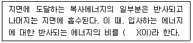
- 코리올리
- 플랑크
- 돕슨
- 알베도
(정답률: 알수없음)
11. 대루에 의한 해수의 순환이 북대서양에 있는 해수의 침강으로 시작될 때, 해수 침강의 원인은?
- 낮은 온도, 높은 염분
- 높은 온도, 낮은 염분
- 낮은 온도, 낮은 염분
- 높은 온도, 높은 염분
(정답률: 알수없음)
12. 기후변화관련 기구 중 “SBSTA”에 관한 내용으로 옳은 것은?
- CDM 관련 활동의 선도적 수행과 CERs 발급을 총괄한다.
- 기후변화 관련 최고의사결정기구이다.
- 협약관련 불발사항 관리 및 행정적, 재정적 관리를 수행한다.
- 과학적·기술적 정보와 자문을 제공한다.
(정답률: 알수없음)
13. 다음 중 기후변화에 따른 해수면 상승의 가장 주된 요인은?
- 열팽창
- 가뭄
- 그린란드 빙상
- 녹조현상
(정답률: 알수없음)
14. 유엔기후변화협약과 당사국총회에 관한 내용으로 옳지 않은 것은?
- 유엔기후변화협약에서 모든 당사국은 공동의 그러나 차별화된 책임 및 능력에 입각한 의무부담 원칙에 따라 차별화된 기후변화 대응노력을 기울일 것을 약속했다.
- COP26에는 메탄과 같은 non-CO2 GHCs 감축 등의 내용이 포함되었다.
- COP7에서 잔류성유기오염물질(POPs) 생산과 사용의 금지·제한을 다룬 스톡홀름 협약을 채택했다.
- COP3에서 청정개발체제, 배출권거래제도, 공동이행제의 도입이 포함된 교토의정서를 채택했다.
(정답률: 알수없음)
15. 다음 중 온실가스 총 배출량이 가장 많은 업체는?
- 이산화탄소 100톤, 아산화질소 10톤을 배출하는 업체
- 메탄 50톤, 아산화질소 5톤을 배출하는 업체
- 이산화탄소 50톤, 육불화황 0.1톤을 배출하는 업체
- 아산화질소 5톤, 육불화황 0.1톤을 배출하는 업체
(정답률: 알수없음)
16. 기후시스템에 관한 내용으로 옳지 않은 것은?
- 대기권, 수권, 지권, 빙권, 생물권의 각 요소가 상호작용하며 끊임없이 변화하기 때문에 기후시스템은 자연적으로 변할 수 있다.
- 대기권과 수권의 상호작용으로 발생하는 엘니뇨와 라니냐는 전 지구 기후에 영향을 미친다.
- 기후시스템 구성요소 사이의 에너지는 적은 쪽에서 많은 쪽으로 이동하여 새로운 균형을 이루려는 경향이 있다.
- 태양의 방출에너지나 이산화탄소 농도변화와 같은 기후시스템의 외부강제력 변화나 내부 변화에 의한 대류권계면에서의 연직방향 순복사조도 변화량을 복사강제력이라 한다.
(정답률: 알수없음)
17. 다음 중 총 배출량을 기준으로 할 때, 실질적으로 지구에 미치는 온실효과 기여도가 가장 높은 물질은?
- SF6
- CH4
- CO2
- N2O
(정답률: 알수없음)
18. 기후변화의 영향과 취약성에 관한 내용으로 옳지 않은 것은?
- 기후변화의 영향이 크고 적응력이 낮을 경우 그 시스템은 취약성이 높다고 할 수 있다.
- 기후변화의 영향이 크고 적응력인 높을 경우 그 시스템은 개발의 기회를 가질 수 있다.
- 기후변화의 영향과 적응력이 모두 낮을 경우 그 시스템은 잔여위험을 가질 수 있다.
- 기후변화의 영향이 작고 적응력이 높을 경우 그 시스템은 지속가능한 발전을 하지 못한다.
(정답률: 알수없음)
19. 우리나라가 유엔기후변화협약(UNFCCC)에 가입한 연도와 교토의정서를 비준한 연도를 순서대로 나열한 것은?
- 2002년, 1998년
- 1993년, 2002년
- 2010년, 20⑤년
- 1997년, 2008년
(정답률: 알수없음)
20. 신기후체제에 대응하기 위해 우리나라가 2021년 유엔기후변화협약 사무국에 제출한 '2030 국가 온실가스 감축목표(NDC)'는?
- 2030년까지 BAU 대비 15% 감축
- 2018년 대비 2030년까지 40% 감축
- 2030년까지 BAU 대비 37% 감축
- 2018년 대비 2030년까지 20% 감축
(정답률: 알수없음)
2과목: 온실가스 배출의 이해
21. 온실가스 배출권거래제의 배출량 보고 및 인증에 관한 지침상 고형폐기물 매립의 보고대상 배출시설에 해당하지 않는 것은?
- 차단형 매립시설
- 혐기성 매립시설
- 관리형 매립시설
- 비관리형 매립시설
(정답률: 알수없음)
22. 온실가스 배출권거래제의 배출량 보고 및 인증에 관한 지침상 “기체, 액체 또는 고체 상태의 원료화합물을 반응기 내에 공급하여 기판 표면에서의 화학반응을 유도함으로써 반도체 기판 위에 고체 반응생성물인 박막층을 형성하는 공정”으로 반도체 제조에 주로 사용되는 공정은?
- 식각공정
- 화학기상증착공정
- 성형공증
- 세정공정
(정답률: 알수없음)
23. 온실가스 배출권거래제의 배출량 보고 및 인증에 관한 지침상 암모니아 제조공정에 해당하지 않는 것은?
- 질소화 공정
- 나프타개질 공정
- 나프타탈황 공정
- 가스전환 공정
(정답률: 알수없음)
24. 자동차의 온실가스 배출저감 기술에 관한 내용으로 옳지 않은 것은?
- 에어컨의 구조와 냉매를 변경하여 온실가스 배출을 줄일 수 있다.
- 배기관에 후처리장치를 부착하여 온실가스 배출을 줄일 수 있다.
- 가솔린 자동차를 하이브리도 자동차로 변경하여 온실가스 배출을 줄일 수 있다.
- 자동차의 증량을 증가시켜 온실가스 배출을 줄일 수 있다.
(정답률: 알수없음)
25. 온실가스 배출권거래제의 배출량 보고 및 인증에 관한 지침상 유리생산 활동에 관한 내용으로 옳지 않은 것은?
- 유리생산 공정의 보고대상 온실가스에는 CO2, CH4가 있다.
- 배출원 카테고리에는 유리 생산뿐만 아니라 생산공정이 유사한 글래스울(glass wool) 생산으로 인한 배출도 포함된다.
- 유리 제조에 유리 원료뿐만 아니라 컬릿(cullet)을 일정량 사용하기도 한다.
- 재활용 유리는 이미 반응을 마친 석회성분을 함유하고 있기 때문에 탄산염광물과 함께 용해로에서 용해되어도 이산화탄소를 발생시키지 않는다.
(정답률: 알수없음)
26. 유리생산을 위해 다음 연료를 용융·용해시설에 투입했을 때, 일반적으로 연료 성분으로 인한 CO2 배출이 없는 것은?
- 석회석
- 백운석
- 소석회
- 소다회
(정답률: 알수없음)
27. 온실가스 배출권거래제의 배출량 보고 및 인증에 관한 지침상 석유정제공정의 보고대상 배출시설에 해당하지 않는 것은?
- 소성시설
- 수소제조시설
- 촉매재생시설
- 코크스제조시설
(정답률: 알수없음)
28. 온실가스 배출권거래제의 배출량 보고 및 인증에 관한 지침상 항공기 운항으로 인한 온실가스 배출량 산정에 관한 설명으로 옳은 것은?
- 항공기 운항으로 인한 온실가스 배출량은 항공기의 운전조건, 운항횟수에 따라 달라지지만 비행거리, 비행단계별 운항시간, 배출고도의 영향을 받지는 않는다.
- 제트연료를 사용하는 항공기는 Tier 1 산정방법론으로 온실가스 배출량을 산정해야 한다.
- Tier 2 산정방법론으로 온실가스 배출량을 산정할 때 이착륙과정(LTO 모드)과 순항과정(cruise 모드)을 구분해야 한다.
- 새로운 데이터가 없을 경우 CH4의 기본 배출계수는 10kg/TJ 로 한다.
(정답률: 알수없음)
29. 다음 중 소다회의 생산제법에 해당하지 않는 것은?
- 르블랑(Leblanc) 법
- 암모니아 소다법
- 메록스(Merox) 법
- 염안 소다법
(정답률: 알수없음)
30. 온실가스 배출권거래제의 배출량 보고 및 인증에 관한 지침상 고형폐기물 매립의 보고대상 온실가스는?
- CO2
- CH4
- N2O
- SF6
(정답률: 알수없음)
31. 온실가스 배출권거래제의 배출량 보고 및 인증에 관한 지침상 일반적인 배연탈황시설의 반응 생성물에 해당하지 않는 것은?
- CaSO3
- CaSO4 · 2H2O
- CaO
- H2SO3
(정답률: 알수없음)
32. 온실가스 배출권거래제의 배출량 보고 및 인증에 관한 지침상 아연 생산공정의 보고대상 배출시설에 관한 내용으로 옳지 않은 것은?
- 전해로는 주로 비철금속 계통의 물질을 용융시키는데 이용되며 대표적인 것으로 알루미늄전해로가 있다.
- 배소로는 광석이 용해되지 않을 정도의 온도에서 광석과 산소, 수증기, 염소 등을 상호작용시켜 다음 제련조작에서 처리하기 쉬운 화합물로 변화시키는데 사용되는 로를 말한다.
- 전해로는 전해질용액, 용융전해질 등의 이온전도체에 전류를 흘려 화학변화를 일으키는 로를 말한다.
- TSL 공정은 잔재 또는 폐기물로부터 각종 유가금속을 회수하고 최종 잔여물을 친환경적인 청정슬래그로 만드는 공정으로 보고대상 배출시설에는 포함되지 않는다.
(정답률: 알수없음)
33. 온실가스 배출권거래제의 배출량 보고 및 인증에 관한 지침상 이동연소(철도) 부문의 온실가스 배출량을 Tier 3 산정방법론으로 산정할 때 사용되는 활동자료에 해당하지 않는 것은?
- 기관차의 수
- 기관차의 연간 운행시간
- 기관차종, 엔진에 따른 연료소비량
- 기관차의 평균 정격 출력
(정답률: 알수없음)
34. 온실가스 배출권거래제의 배출량 보고 및 인증에 관한 지침상 이동연소의 온실가스 보고대상 배출시설에 해당하지 않은 것은?
- 특수자동차
- 전기기관차
- 이륜자동차
- 이동식 소각로
(정답률: 알수없음)
35. 온실가스 배출권거래제의 배출량 보고 및 인증에 관한 지침상 다음 철강생산 공정 중 CO2 배출계수 값(tCO2/t-생산물)이 가장 큰 곳은?
- 직접 환원철 생산
- 전기로
- 코크스 오븐
- 전로
(정답률: 알수없음)
36. 온실가스 배출권거래제의 배출량 보고 및 인증에 관한 지침상 카바이드 생산공정의 보고대상 온실가스를 모두 나열한 것은?
- N2O
- CH4, N2O
- CO2, N2O
- CO2, CH4
(정답률: 알수없음)
37. 온실가스 배출권거래제의 배출량 보고 및 인증에 관한 지침상 납 생산 공정에 관한 설명으로 옳지 않은 것은?
- 연정광으로부터 미가공 조연(bullion)을 생산하는 1차 생산공정에서는 소결과정을 생략할 수 없다.
- 소결공정에서 연정광을 재활용 소결물, 석회석, 실리카, 산소, 납 고함유 슬러지 등과 혼합·연소하여 황과 휘발성 금속을 제거한다.
- 제련공정에서 일반적은 고로 또는 ISF(imperial smelting furnace)가 이용되며 납산화물의 환원과정에서 CO2가 배출된다.
- 정제납의 2차 생산은 재활용 납을 재사용하기 위한 준비과정이다.
(정답률: 알수없음)
38. 온실가스 배출권거래제의 배출량 보고 및 인증에 관한 지침상 석유화학제품생산 공정의 보고 대상 배출시설에 해당하지 않는 것은?
- 메탄올 반응시설
- 에틸렌옥사이드 반응시설
- 테레프탈산 생산시설
- 하이드록실아민 생산시설
(정답률: 알수없음)
39. 온실가스 배출권거래제의 배출량 보고 및 인증에 관한 지침에 따라 Tier 1 산정방법론으로 반도체 제조공정의 FC 가스 배출량을 구하고자 한다. 이 때 활용되는 다음 식에서 Qi의 의미는? (단, FCgas는 FC 가스의 배출량, EFFC는 배출계수임)
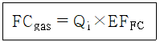
- 원료투입량(kg)
- FC 가스주입량(m3/y)
- 제품생산량(t/y)
- 제품생산실적(m2/y)
(정답률: 알수없음)
40. 사업장의 월평균 전기사용량이 1000kWh 일 때, 온실가스 배출량(tCO2-eq/y)은?
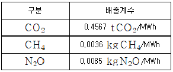
- 0.434
- 0.559
- 4.341
- 5.513
(정답률: 알수없음)
3과목: 온실가스 산정과 데이터 품질관리
41. 온실가스 배출권거래제의 배출량 보고 및 인증에 관한 지침상 경유의 고정연소를 통해 연간 20만 tCO2-eq의 온실가스를 배출하는 시설의 산정등급(Tier) 최소 적용기준은?
- Tier 1
- Tier 2
- Tier 3
- Tier 4
(정답률: 알수없음)
42. 온실가스 배출권거래제 운영을 위한 검증 지침에 따른 온실가스 배출량 등의 검증절차 중 ( ) 안에 알맞은 것은?
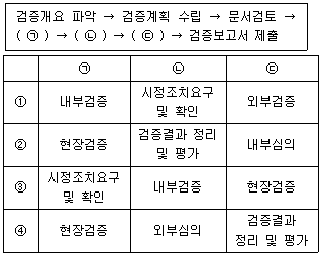
- ①
- ②
- ③
- ④
(정답률: 알수없음)
43. 온실가스 배출권거래제의 배출량 보고 및 인증에 관한 지침상 철강 생산공정의 보고대상 배출시설에 해당하지 않는 곳은?
- 소결로
- 전기로
- 코크스로
- 증착로
(정답률: 알수없음)
44. 온실가스 배출권거래제의 배출량 보고 및 인증에 관한 지침상 기체연료 고정연소시설의 온실가스 배출량을 Tier 2 산정방법론으로 산정할 때, 매개변수에 관한 내용으로 옳지 않은 것은? (단, 온실가스종합정보센터에서 별도의 계수를 공표하여 지침에 수록하지 않은 경우)
- 사업자 또는 연료공급자에 의해 측정된 측정불확도 ±5.0% 이내의 연료 사용량 자료를 활동자료로 활용한다.
- 열량계수는 국가 고유 발열량 값을 사용한다.
- 배출계수는 국가 고유 배출계수를 사용한다.
- 산화계수는 기본값인 1.0을 적용한다.
(정답률: 알수없음)
45. L시멘트사의 #4 Kiln에서 연간 80000t의 클링커가 생산되며 이로 인해 500t의 시멘트 킬른먼지(CKD)가 발생하고 있다. 온실가스 배출권거래제의 배출량 보고 및 인증에 관한 지침에 따라 Tier 1 산정방법론으로 구한 L시멘트사 #4 Kiln의 클링커 생산에 따른 CO2 배출량(tCO2/y)은? (단, CKD를 전량 회수하여 Kiln에 투입함, 클링커생산량 당 CO2 배출계수는 0.51 tCO2/t-클링커, 투입원료 중 탄산염이 아닌 기타 탄소성분에 기인하는 CO2 배출계수는 0.01 tCO2/t-클링커, 킬른에서 유실된 CKD의 하소율은 0)
- 40800
- 40880
- 41600
- 41860
(정답률: 알수없음)
46. 온실가스 배출권거래제의 배출량 보고 및 인증에 관한 지침상 폐열이용 특례로 인정받기 위한 대상 폐기물 또는 고형연료에 해당하지 않는 것은?
- 폐기물관리법에 따라 수집·운반, 재활용 또는 처분되는 사업장폐기물 중 저위발열량이 3000kcal/kg 이상인 폐유
- 폐기물관리법에 따른 지정폐기물
- 폐기물관리법에 따른 자체 발생한 사업장폐기물
- 폐기물관리법에 따른 생활폐기물
(정답률: 알수없음)
47. 온실가스 배출권거래제의 배출량 보고 및 인증에 관한 지침에 따라 고형폐기물의 매립활동에 의한 온실가스 배출량을 Tier 1 산정방법론으로 산정하고자 한다. 기타 유형 매립시설에서 발생 가능한 최대 메탄발생량이 1000 tCH4/y, 메탄회수량이 800 tCH4/y 일 때, 메탄배출량(tCH4/y)은?
- 200
- 267
- 300
- 367
(정답률: 알수없음)
48. 온실가스 배출권거래제의 배출량 보고 및 인증에 관한 지침상 다음 모니터링 유형에 관한 내용으로 옳은 것은?
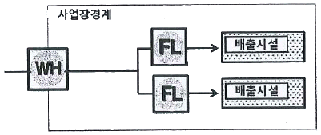
- 배출시설 활동자료를 구매량 기반 측정기기와 무관하게 교정된 자세 측정기기를 이용하여 모니터링 하는 방법이다.
- 연료·원료 공급자가 상거래 등을 목적으로 설치하는 측정기기와 주기적인 정도검사를 실시하는 내부 측정기기와 같이 설치되어 있을 경우 활동자료를 수집하는 방법이다.
- 다수의 교정된 측정기기가 부착된 경우 교정된 자체 측정기기 값을 사용하지 않아야 한다.
- 각 배출시설별 활동자료를 구매연료·원료 등의 메인측정기기 활동자료에서 타당한 배분방식으로 모니터링 하는 방법이다.
(정답률: 알수없음)
49. 온실가스 배출권거래제의 배출량 보고 및 인증에 관한 지침상 고상폐기물의 소각에 의한 온실가스 배출량을 Tier 1 산정방법론으로 산정할 때, FCF값(화석탄소 질량분율)이 0 인 생활폐기물은?
- 섬유
- 플라스틱
- 음식물
- 종이
(정답률: 알수없음)
50. 온실가스 배출권거래제 운영을 위한 검증 지침상 검증팀장이 수립하는 검증계획에 포함되어야 하는 항목에 해당하지 않는 것은?
- 검증대상
- 검증 수행방법 및 검증절차
- 배출량 산정방법
- 현장검증 단계에서의 인터뷰 대상 부서 또는 담당자
(정답률: 알수없음)
51. A 지자체에서 혐기성 생활폐기물 관리형 매립지를 운영하고 있으며 최근에 제출한 명세서에 온실가스 배출량을 1175000톤으로 보고했다. 이 매립지의 온실가스 배출량 산정에 관한 내용으로 옳지 않은 것은? (단, 시설규모를 최초 결정해야 하는 경우가 아님)
- 배출량에 따라 시설규모를 분류할 때 매립지는 C 그룹에 속하며 Tier 1 산정방법론으로 온실가스 배출량을 산정해야 한다.
- 회수된 메탄가스가 외부 공급/판매, 자체 연료 사용 및 Flaring 등으로 처리되기 위한 별도의 측정이 없을 경우 메탄회수량 기본값을 1로 처리한다.
- 폐기물성상별 매립량 활동자료는 1981년 1월 1일 이후 매립된 폐기물에 대해서만 수집한다.
- 혐기성 관리형 매립지이기 때문에 메탄보정계수(MCF)는 2006 IPCC 국가 인벤토리 작성을 위한 가이드라인에 따라 1.0을 적용해야 한다.
(정답률: 알수없음)
52. 온실가스 배출권거래제의 배출량 보고 및 인증에 관한 지침상 사업장 고유 배출계수 등을 개발하기 위해 시료를 채취 및 분석할 때, 연료 및 원료와 시료 최초분석주기의 연결이 옳지 않은 것은? (단, 연 반입량이 24만톤을 초과하지 않으며 기타 사항을 고려하지 않음)
- 고체연료 : 월 1회
- 액체연료 : 분기 1회
- 천연가스 : 반기 회
- 공정부생가스 : 반기 1회
(정답률: 알수없음)
53. 온실가스 배출권거래제의 배출량 보고 및 인증에 관한 지침상 신설되는 배출시설의 시설규모 결정에 관한 내용으로 옳지 않은 것은?
- 신설되는 배출시설의 예상 온실가스 배출량을 계산하여 그 값에 따라 시설규모를 결정한다.
- 배출시설에서 여러 종류의 연료를 사용하는 경우 각 연료의 사용에 따른 배출량의 총합으로 배출시설규모 및 산정등급(Tier)을 결정해야 한다.
- C그룹의 배출시설에서 초기가동·착화연료 등 소량으로 사용하는 보조연료의 배출량이 시설 총 배출량의 5% 미만이며 보조연료의 배출량 총합이 25000 tCO2-eq 미만일 때 차하위 산정등급을 적용할 수 있다.
- B그룹의 배출시설에서 초기가동·착화연료 등 소량으로 사용하는 보조연료의 배출량이 시설 총 배출량의 10% 미만이며 보조연료의 배출량 총합이 35000 tCO2-eq 미만일 때 차하위 산정등급을 적용할 수 있다.
(정답률: 알수없음)
54. 온실가스 배출권거래제의 배출량 보고 및 인증에 관한 지침상 바이오매스로 취급되는 항목에 해당하지 않는 것은?
- 폐목재
- 하구슬러지
- 산업폐기물
- 조류
(정답률: 알수없음)
55. 온실가스 배출권거래제의 배출량 보고 및 인증에 관한 지침상 품질관리(QC) 활동 중 “보고의 적절성”의 세부내용에 해당하지 않는 것은?
- 조직경계 설정의 적절성·정확성 확인
- 배출량 산정 및 보고 업무 담당자, 내부감사 담당자의 책임·권한의 문서화 여부 확인
- 이행계획, 명세서, 이행실적 등 지침에서 요구하는 자료의 목차, 내용, 서식에 따라 적절하게 배출량을 보고하는 지 여부 확인
- 배출량 산정에 관한 정보화시스템을 구축하거나 활용할 경우 자료의 입력 및 처리과정의 적절성 여부 확인
(정답률: 알수없음)
56. 온실가스 배출권거래제의 배출량 보고 및 인증에 관한 지침에 따라 열병합 발전시설의 열(스팀) 생산에 따른 온실가스 배출량을 다음식으로 산출하고자 한다. 이 때, 각 변수에 관한 내용으로 옳지 않은 것은?
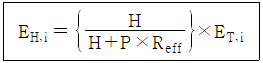
- H는 열생산량(TJ)을 의미한다.
- P는 전기생산량(TJ)을 의미한다.
- Reff는 전기 생산효율을 열 생산효율로 나눈 값이다.
- ET, i는 열병합 발전설비의 총 온실가스 배출량(tGHG)을 의미한다.
(정답률: 알수없음)
57. 온실가스 배출권거래제의 배출량 보고 및 인증에 관한 지침상 오존파괴물질(ODS)의 대체물질 사용에 의한 온실가스 배출량을 Tier 1 산정방법론으로 산정하고자 한다. 비에어로졸 용매 부분과 에어로졸 부문의 온실가스 배출량 산정에 관한 내용으로 옳은 것은?
- 에어로졸 제품의 수명이 1년 이하로 가정 되기 때문에 초기 충진량의 90%를 기본 배출계수로 사용한다.
- 비에어로졸 용매는 제품을 사용하기 시작한 후 5년 내에 서서히 배출되는 것으로 간주한다.
- 에어로졸은 제품 사용시점을 최종 사용자에게 공급되는 시기로 정의하지 않으므로 회수, 재활용, 파기 등을 고려하지 않는다.
- 에어로졸과 비에어로졸 용매 부분에서 보고되는 항목은 할당대상업체의 온실가스 총 배출량에 합산한다.
(정답률: 알수없음)
58. 온실가스 배출권거래제의 배출량 보고 및 인증에 관한 지침상 탄산염의 기타 공정 사용에 의한 온실가스 배출량을 Tier 2 산정방법론으로 산정할 때, 활동자료의 측정불확도 기준은?
- ±9.5% 이내
- ±7.5% 이내
- ±5.0% 이내
- ±2.5% 이내
(정답률: 알수없음)
59. 온실가스 배출권거래제의 배출량 보고 및 인증에 관한 지침상 다음 내용과 관련 있는 기호는?
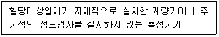
(정답률: 알수없음)
60. 온실가스 목표관리 운영 등에 관한 지침상 건물이 건축물 대장 또는 등기부에 각각 등재되어 있거나 소유지분을 달리하고 잇는 경우에 관한 내용으로 옳지 않은 것은?
- 인접한 대지에 동일 법인이 여러 건물을 소유한 경우에는 한 건물로 본다.
- 동일부지 내 있거나 인접한 집합건물이 동일한 조직에 의해 에너지 공급·관리를 받을 경우 한 건물로 간주한다.
- 에너지관리의 연계성이 있는 복수의 건물은 한 건물로 본다.
- 건물의 소유구분이 지분형식으로 되어 있을 경우에는 지분별로 건물의 소유자를 구분한다.
(정답률: 알수없음)
4과목: 온실가스 감축관리
61. 제7차 당사국 총회에서 지정한 소규모 CDM 사업에 해당하지 않는 것은?
- 최대발전용량이 15MW 이하인 신재생에너지 사업
- 에너지 소비량을 연간 60 GWh 저감하는 에너지절약사업
- 직접배출량이 연간 60000 tCO2-eq 이하인 인위적 배출 감축사업
- 연간 5000톤 이상의 폐기물을 재활용하는 사업
(정답률: 알수없음)
62. 온실가스 감축을 위해 건물 옥상에 설치용량이 1 MW, 발전효율이 12%인 태양광 발전시설을 설치했을대, 3년 동안 태양광 발전시설에 의해 감축된 온실가스 배출량(tCO2-eq)은? (단, 배출계수는 0.4594 tCO2-eq/MWh 임)
- 489
- 690
- 980
- 1449
(정답률: 알수없음)
63. 액상 유기화합물을 사용하여 수소를 저장하는 방법에 관한 내용으로 옳지 않은 것은?
- 수소는 가솔린, 천연가스에 비해 에너지 밀도가 낮기 때문에 대용량 이용보다 소용량 이용에 적합하다.
- 수소화, 탈수소화 반응 등을 통해 수소를 저장 및 사용할 수 있다.
- 기존 화석연료의 저장·운송 인프라를 활용할 수 있다.
- 액상유기수소운반체(LOHC)로 사요할 수 있는 물질에는 방향족 물질과 헤테로고리 화합물 등이 있다.
(정답률: 알수없음)
64. 어떤 철강회사에서 온실가스 감축을 위해 주연료인 경우 100000L를 프로판 50000kg 으로 대체했을 때, 이론적으로 온실가스 배출량(tCO2-eq)이 얼마나 감소했는가?
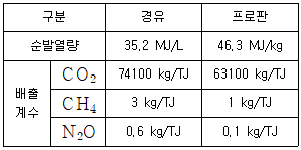
- 152012
- 162270
- 172070
- 115512
(정답률: 알수없음)
65. 온실가스 감축기술 중 원료 및 연료의 개선 또는 대체물의 적용에 관한 내용으로 옳은 것은?
- 원료 공급자의 온실가스 배출 감축량에 따라 배출권 구매권을 부여한다.
- 공정에 사용되는 온실가스를 온실가스가 아닌 물질 또는 지구온난화지수가 낮은 물질로 대체한다.
- 온실가스를 처리하여 대기로 배출되는 양을 감축한다.
- 온실가스를 재활용하거나 다른 목적으로 활용한다.
(정답률: 알수없음)
66. 화학산업에서 온실가스 배출량을 감축하기 위해서는 에너지 효율을 높이고 화석연료의 사용을 최소화해야 한다. 이 때, 에너지효율을 높이기 위해 적용할 수 잇는 공정개선 방버으로 적합하지 않은 것은?
- 설비 및 기기효율 개선
- 에너지 효율 제고를 위한 제조법의 전환 및 공정 개발
- 배출 에너지의 회수
- 생산량 증가를 통한 원단위 개선
(정답률: 알수없음)
67. 연료전지(fuel cell)의 형태별 특징으로 옳지 않은 것은?
- 인산형(PAEC) 연료전지는 인산염을 전해질로 사용하며 운전온도는 150~250℃ 정도이다.
- 알칼리형(AFC) 연료전지는 수산화칼륨과 같은 알칼리를 전해질로 사용하며 비교적 저온에서 운전한다.
- 고분자전해질형(PEMFC) 연료전지는 CO 농도가 높거나 연료에 황이 포함되어 있으면 성능이 현저하게 떨어진다.
- 고체산화물형(SOFC) 연료전지는 백금을 주촉매로 사용하며 비교적 저온에서 운전한다.
(정답률: 알수없음)
68. 온실가스 목표관리 운영 등에 관한 지침상 기준연도 배출량을 재산정해야 하는 경우에 해당하지 않는 것은?
- 관리업체의 합병·분할 또는 영업, 자산 양수도 등 권리와 의무의 승계 사유가 발생한 경우
- 조직 경계 내·외부로 온실가스 배출원 또는 흡수원의 변경이 발생한 경우
- 온실가스 배출량 산정방법론이 변경된 경우
- 관리업체의 자본금이 5% 이상 증액된 경우
(정답률: 알수없음)
69. 할당대상업체의 조직경계 외부의 배출시설에서 국제적 기준에 부합하는 방식으로 온실가스를 감축·흡수·제거하는 사업을 무엇이라고 하는가?
- 외부사업
- 공정사업
- 경계사업
- 상쇄사업
(정답률: 알수없음)
70. 셰일가스에 관한 설명 중 ( ) 안에 알맞은 내용은?
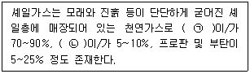
- ㉠ 에탄, ㉡ 콘센테이트
- ㉠ 메탄, ㉡ 에탄
- ㉠ 수소, ㉡ 벤젠
- ㉠ 산소, ㉡ 수소
(정답률: 알수없음)
71. 미분탄 화력발전소에서 배출되는 이산화탄소를 흡수제를 사용하여 포집할 때에 관한 내용으로 옳지 않은 것은?
- MEA를 사용하는 아민흡수법은 현재 상용화 되어 있는 대표적인 기술이다.
- 배출가스의 이산화탄소 농도가 50~65% 정도로 높기 때문에 적어도 3가지 이상의 흡수제를 동시에 사용해야 한다.
- 사용된 흡수제를 재사용하기 위한 재생공정에 많은 에너지와 운전비용이 소모되는 단점이 있다.
- 기존 발전소에 적용이 용이하다는 장점이 있다.
(정답률: 알수없음)
72. 외부사업 타당성 평가 및 감축량 인증에 관한 지침상 외부사업 온실가스 감축량을 객관적으로 증명하기 위한 외부사업 모니터링 원칙으로 옳지 않은 것은?
- 모니터링 방법은 등록된 사업계획서 및 승인 방법론을 준수해야 한다.
- 외부사업은 불확도를 최소화할 수 있는 방식으로 측정되어야 한다.
- 외부사업 온실가스 감축량은 일관성, 재현성, 투명성 및 정확성을 갖고 산정되어야 한다.
- 외부사업 온실가스 감축량 산정에 필요한 데이터 추정 시 값은 진보적으로 적용되어야 한다.
(정답률: 알수없음)
73. CDM 사업에서 기준 배출량을 도출하기 위한 베이스라인 시나리오 설정방법으로 적합하지 않은 것은?
- 현재 실제로 배출되고 있는 양 또는 과거 배출량
- 투자 장애요인을 고려했을대 경제적으로 매력 있는 기술로부터의 배출량
- 해당 지역 내에서 활용되는 사례가 존재하지 않는 기술로부터의 배출량
- 유사한 사회적, 경제적, 환경적, 기술적 환경에서 과거 5년 동안 수행된 비슷한 사업활동(성과가 동일 범주의 상위 20% 이내)으로부터의 평균 배출량
(정답률: 알수없음)
74. 청정개발체제(CDM) 추진체계를 순서대로 나열한 것은?
- 사업계획 → 타당성 확인 및 승인획득 → 등록 → 모니터링 → 검증 및 인증 → CERs 발행
- 사업계획 → 타당성 확인 및 승인획득 → 모니터링 → 등록 → 검증 및 인증 → CERs 발행
- 사업계획 → 타당성 확인 및 승인획득 → CERs 발행 → 등록 → 모니터링 → 검증 및 인증
- 사업계획 → 타당성 확인 및 승인획득 → 모니터링 → 등록 → CERs 발행 → 검증 및 인증
(정답률: 알수없음)
75. 온실가스 배출권거래제의 배출량 보고 및 인증에 관한 지침상 품질관리(QC) 및 품질보증(QA) 활동에 관한 내용으로 옳지 않은 것은?
- 할당대상업체는 자료의 품질을 지속적으로 개선하는 체제를 갖추는 등 배출량 산정의 품질보증 활동을 수행해야 한다.
- 배출량 보고와 관련된 위험을 완화하는 일련의 활동을 내부감사라 한다.
- 품질관리는 산정절차 수행 이후 독립적인 제3자에 의해 완성된 배출량 산정결과를 검토하는 과정이다.
- 품질관리에는 배출활동, 활동자료, 배출계수, 기타 산정 매개변수 및 방법론에 관한 기술적 검토가 포함된다.
(정답률: 알수없음)
76. CCS사업 중 CO2 저장기술에 해당하지 않는 것은?
- 지중저장
- 해양저장
- 지표저장
- 회수저장
(정답률: 알수없음)
77. 온실가스 배출권거래제의 배출량 보고 및 인증에 관한 지침상 ( ) 안에 알맞은 용어는?
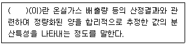
- 불확도
- 표준편차
- 평균
- 중요도
(정답률: 알수없음)
78. 온실가스 목표관리 운영 등에 관한 지침상 벤치마트 기반의 목표 설정방법에 관한 내용 중 ( ) 안에 알맞은 용어는?
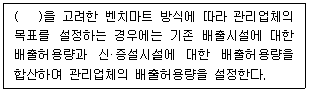
- 최적가용기법(BAT)
- 외부감축실적
- 조기감축실적
- 관리업체의 성장률
(정답률: 알수없음)
79. 온실가스 목표관리 운영 등에 관한 지침상 온실가스 배출량 산정에 관한 내용으로 옳지 않은 것은?
- 관리업체는 시간 경과에 따른 온실가스 배출량 등의 변화를 비교·분석할 수 있도록 일관된 자료와 산정방법론을 사용해야 한다.
- 관리업체가 자체적으로 개발한 산정방법으로 배출량을 산정할 경우 부문별 관장기관으로부터 배출시설 또는 공정단위의 산정방법 또는 고유 배출계수의 사용 가능 여부를 통보받은 후 사용해야 한다.
- 온실가스 배출량 산정에 관한 요소에 변화가 있는 경우 별도의 기록이 필요하지는 않다.
- 관리업체는 온실가스 배출량 산정에 활용된 방법론, 관련 자료와 출처 및 적용된 가정 등을 명확하게 제시할 수 있어야 한다.
(정답률: 알수없음)
80. 온실가스 모니터링 실적보고서에 포함되는 내용에 해당하지 않는 것은?
- 베이스라인 배출량
- 온실가스 배출 감축량 산정
- 사업 후 온실가스 배출량
- 이해관계자의 의견수렴을 위한 모니터링 결과
(정답률: 알수없음)
5과목: 온실가스관련 법규
81. 온실가스 배출권의 할당 및 거래에 관한 법령상 배출권의 이월 및 차입, 소멸에 관한 내용으로 옳지 않은 것은?
- 법령에 따라 주무관청에 제출되지 않은 배출권은 각 이행연도 종료일부터 6개월이 경과하면 그 효력을 잃는다.
- 배출권을 보유한 자는 보유한 배출권을 주무관청의 승인을 받아 계획기간 내의 다음 이행연도로 이월할 수 있다.
- 배출권을 보유한 자는 보유한 배출권을 주무관청의 승인을 받아 계획기간의 최초 이행연도로 이월할 수 없다.
- 할당대상업체는 주무관청의 승인을 받아 계획기간 내의 다른 이행연도에 할당된 배출권의 일부를 차입할 수 있다.
(정답률: 알수없음)
82. 기후위기 대응을 위한 탄소중립·녹색성장 기본법령상 탄소중립도시의 지정에 관한 내용으로 옳지 않은 것은?
- 정부는 도시 내 생태축 보전 및 생태계 복원 사업을 시행하고자 하는 도시를 직접 탄소 중립도시를 지정할 수 있다.
- 정부는 탄소중립도시 조성 사업의 시행을 위해 필요한 비용의 전부 또는 일부를 보조할 수 있다.
- 정부는 기후위기 대응을 위한 자원순환형 도시 조성 사업을 시행하고자 하는 도시를 지방자치단체 장의 요청을 받아 탄소중립도시로 지정할 수 있다.
- 정부는 지정된 탄소중립도시가 지정기준에 맞지 않게 된 경우 개선명령을 내려야하며 지정을 취소할 수는 없다.
(정답률: 알수없음)
83. 온실가스 배출권의 할당 및 거래에 관한 법령상 배출권시장 조성자로 지정할 수 있는 곳이 아닌 것은? (단, 기타 사항은 고려하지 않음)
- 한국산업은행
- 한국수출입은행
- 농협은행
- 종소기업은행
(정답률: 알수없음)
84. 온실가스 배출권의 할당 및 거래에 관한 법령상 주무관청이 보고 또는 자료 제출을 요구하거나 필요한 최소한의 범위에서 현장조사 등의 방법으로 실태조사를 시행할 수 있는 실태조사 대상자에 해당하지 않는 것은?
- 할당대상업체
- 시장조성자
- 검증기관
- 온실가스 감축 최적가용기술자
(정답률: 알수없음)
85. 온실가스 배출권의 할당 및 거래에 관한 법령상 할당대상업체가 인증받은 온실가스 배출량보다 제출한 배출권이 적은 경우 부족한 부분에 대해 부과할 수 있는 과징금 기준은?
- 이산화탄소 1톤당 10만원의 범위에서 해당 이행연도에 배출권 평균 시장가격의 3배 이하
- 이산화탄소 1톤당 10만원의 범위에서 해당 이행연도에 배출권 평균 시장가격의 2배 이하
- 이산화탄소 1톤당 5만원의 범위에서 해당 이행연도에 배출권 평균 시장가격의 3배 이하
- 이산화탄소 1톤당 5만원의 범위에서 해당 이행연도에 배출권 평균 시장가격의 2배 이하
(정답률: 알수없음)
86. 온실가스 배출권의 할당 및 거래에 관한 법령상 배출권 할당의 취소 사유에 해당하지 않는 것은?
- 할당계획 변경으로 배출허용총량이 증가한 경우
- 할당대상업체가 전체 또는 일부 사업장을 폐쇄한 경우
- 할당대상업체의 지정이 취소된 경우
- 사실과 다른 내용으로 배출권의 할당 또는 추가 할당을 신청하여 배출권을 할당받은 경우
(정답률: 알수없음)
87. 온실가스 목표관리 운영 등에 관한 지침상 “연료, 열 또는 전기의 공급점을 공유하고 있는 상태, 즉, 건물 등에 타인으로부터 공급된 에너지를 변환하지 않고 다른 건물 등에 공급하고 있는 상태”를 뜻하는 용어는?
- 에너지 관리의 연계성
- 에너지 관리 상태
- 에너지 관리의 상호 의존성
- 에너지 관리 경계
(정답률: 알수없음)
88. 온실가스 목표관리 운영 등에 관한 지침상 교통분야 특례에 관한 내용으로 옳지 않은 것은?
- 동일 법인 등이 여객자동차운수사업자로부터 차량을 일정기간 임대 등의 방법을 통해 실질적으로 지배하고 통제할 경우 해당 법인 등의 소유로 본다.
- 일반화물자동차 운송 사업을 경영하는 법인 등이 허가받은 차량은 차량 소유 유무에 상관없이 해당 법인 등이 지배적인 영향력을 미치는 차량으로 본다.
- 교통분야에 속하는 관리업체를 지정할 때 동일한 사업자등록번호로 등록된 복수의 교통분야 사업장은 하나의 사업장에 속한 배출시설로 본다.
- 관리업체 지정을 위해 온실가스 배출량을 산정할 때에는 항공 및 선박의 국제항공과 국제 해운부문을 포함한다.
(정답률: 알수없음)
89. 온실가스 배출권의 할당 및 거래에 관한 법령상 배출권 할당위원회에 관한 설명으로 옳지 않은 것은?
- 할당위원회는 위원장 1명과 20명 이내의 위원으로 구성한다.
- 할당위원회에는 환경부령으로 정하는 바에 따라 간사위원 2명을 둔다.
- 배출권 할당위원회의 회의는 재적위원 과반수의 출석으로 개의하고 출석위원 과반수의 찬성으로 의결한다.
- 배출권 할당위원회의 회의는 할당위원회의 위원장이 필요하다고 인정하거나 재적위원의 3분의 1 이상이 요구할 때 개최한다.
(정답률: 알수없음)
90. 온실가스 목표관리 운영 등에 관한 지침상 '매개변수'에 관한 내용이 아닌 것은?
- 두 개 이상 변수 사이의 상관관계를 나타내는 변수
- 온실가스 배출량을 산정하는 데 필요한 탄소함량
- 온실가스 배출량을 산정하는 데 필요한 불확도
- 온실가스 배출량을 산정하는 데 필요한 발열량
(정답률: 알수없음)
91. 기후위기 대응을 위한 탄소중립·녹색성장 기본법령상의 내용으로 옳은 것은? (단, 기타 사항은 고려하지 않음)
- 정부는 국가비전과 중장기감축목표 등의 달성에 기여하기 위해 이산화탄소를 배출단계에서 포집하여 이용하거나 저장하는 기술의 개발·발전을 지원하기 위한 시책을 마련해야 한다.
- 정부는 국가비전 및 중장기감축목표 등의 달성을 위해 20년을 계획기간으로 하는 국가기본계획을 2년마다 수립·시행해야 한다.
- 시·도지사는 국가기본계획과 관할 구역의 지역적 특성 등을 고려하여 7년을 계획기간으로 하는 시·도계획을 7년마다 수립·시행해야 한다.
- 국가기본계획을 수립하거나 변경하는 경우 위원회의 심의를 거친 후 국회와 대통령의 심의를 거쳐야 한다.
(정답률: 알수없음)
92. 온실가스 배출권의 할당 및 거래에 관한 법령상 객관적이고 전문적인 검증을 위해 외부 검증 전문기관을 지정하여 검증하는 항목이 아닌 것은? (단, 기타 사항은 고려하지 않음)
- 외부사업 온실가스 감축량
- 실제 배출된 온실가스 배출량에 대해 배출량 산정계획서를 기준으로 작성한 명세서
- 이행계획서
- 배출량 산정계획서
(정답률: 알수없음)
93. 온실가스 배출권거래제의 배출량 보고 및 인증에 관한 지침에 따라 배출량 등의 산정절차 중 ( ) 안에 알맞은 내용을 순서대로 나열한 것은?
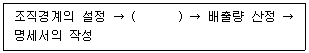
- 배출활동의 확인·구분 → 배출활동별 배출량 산정방법론의 선택 → 배출량 산정 및 모니터링 체계의 구축 → 모니터링 유형 및 방법의 설정
- 배출활동별 배출량 산정방법론의 선택 → 모니터링 유형 및 방법의 설정 → 배출량 산정 및 모니터링 체계의 구축 → 배출활동의 확인·구분
- 배출활동별 배출량 산정방법론의 선택 → 배출량 산정 및 모니터링 체계의 구축 → 배출활동의 확인·구분 → 모니터링 유형 및 방법의 설정
- 배출활동의 확인·구분 → 모니터링 유형 및 방법의 설정 → 배출량 산정 및 모니터링 체계의 구축 → 배출활동별 배출량 산정방법론의 선택
(정답률: 알수없음)
94. 온실가스 목표관리 운영 등에 관한 지침상 배출량 산정에 관한 내용으로 옳지 않은 것은?
- 관리업체는 온실가스 배출유형을 온실가스 직접배출과 간접배출로 구분하여 온실가스 배출량을 산정해야 한다.
- 관리업체는 기준치를 초과하지 않은 온실가스에 대해서는 배출량을 산정하지 않아도 된다.
- 관리업체는 법인 단위, 사업장 단위, 배출시설 단위 및 배출활동별로 온실가스 배출량을 산정해야 한다.
- 보고대상 배출시설 중 연간배출량이 100 tCO2-eq 미만인 소규모 배출시설이 동일한 배출활동 및 활동자료인 경우 부문별 관장기관의 확인을 거쳐 배출시설 단위로 구분하여 보고하지 않고 시설군으로 보고할 수 있다.
(정답률: 알수없음)
95. 신에너지 및 재생에너지 개발·이용·보급 촉진법령상 “재생에너지”에 해당하지 않는 것은? (단, 기타 사항은 고려하지 않음)
- 수소에너지
- 태양에너지
- 풍력
- 지열에너지
(정답률: 알수없음)
96. 온실가스 배출권의 할당 및 거래에 관한 법령상 할당대상업체에 배출권을 할당하는 기준을 정할 때 고려사항에 해당하지 않는 것은?
- 유상으로 할당하는 배출권의 비율
- 조기감축실적
- 할당대상업체의 배출권 제출 실적
- 할당대상업체의 시설투자 등이 국가온실가스 감축목표 달성에 기여하는 정도
(정답률: 알수없음)
97. 온실가스 배출권의 할당 및 거래에 관한 법령상 온실가스 배출권 할당신청서를 주문관청에 제출할 때 포함되어야 하는 사항에 해당하지 않는 것은?
- 계획기간 내 신·재생에너지 등 친환경 에너지 사용계획
- 할당대상업체로 지정된 연도의 직전 3년간 온실가스 배출량
- 공익을 목적으로 설립된 기관·단체 또는 비영리법인으로서 대통령령으로 정하는 업체임을 확인할 수 있는 서류
- 배출효율을 기준으로 대통령령으로 정하는 방법에 따라 산정한 이행연도별 배출권 할당신청량
(정답률: 알수없음)
98. 온실가스 배출권의 할당 및 거래에 관한 법령상 할당결정심의위원회에서 심의·조정하는 사항에 해당하지 않는 것은?
- 배출권 할당의 취소
- 배출권 거래시장의 개설·운영
- 할당계획 변경으로 인한 배출권의 추가할당
- 할당대상업체별 배출권의 할당
(정답률: 알수없음)
99. 온실가스 목표관리 운영 등에 관한 지침상 조직의 온실가스 배출과 관련하여 지배적인 영향력을 행사할 수 있는 지리적 경계, 물리적 경계, 업무활동 경계를 의미하는 용어는?
- 조직경계
- 운영경계
- 운영통제 범위
- 사업장
(정답률: 알수없음)
100. 온실가스 목표관리 운영 등에 관한 지침상 기존 배출시설의 예상배출량 산정방법으로 가장 적합하지 않은 것은?
- 기준연도 배출시설 배출량의 선형 증감 추세
- 기준연도 배출시설 배출양의 증감률
- 국제 연평균 온실가스 배출량의 증감 추세
- 기준연도 배출시설의 단위 활동자료와 온실가스 배출량의 상관관계식을 이용한 배출량
(정답률: 알수없음)